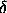
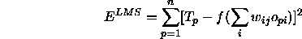
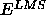
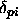
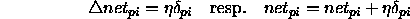
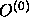
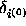
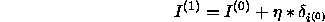

The inversion of a neural net tries to find an input pattern that generates a specific output pattern with the existing connections. To find this input, the deviation of each output from the desired output is computed as error

. This error value is used to approach the target input in input space step by step. Direction and length of this movement is computed by the inversion algorithm.
The most commonly used error value is the Least Mean Square
Error.  is defined as
is defined as

The goal of the algorithm therefore has to be to minimize

.Since the error signal

can be computed as
and for the adaption value of the unit activation follows

In this implementation, a uniform pattern is applied to the input units in the first step, whose activation level depends upon the variable input pattern. This pattern is propagated through the net and generates the initial output

. The difference between this output vector and the target output vector is propagated backwards through the net as error signals
. This is analogous to the propagation of error signals in the backpropagation training, with the difference that no weights are adjusted here. When the error signals reach the input layer, they represent a gradient in input space, which gives the direction for the gradient descent. Thereby, the new input vector can be computed as

where  is the step size in input space, which is set by the
variable eta.
is the step size in input space, which is set by the
variable eta.
This procedure is now repeated with the new input vector until the distance between the generated output vector and the desired output vector falls below the predefined limit of delta_max, when the algorithm is halted.
For a more detailed description of the algorithm and its implementation see [Mam92].